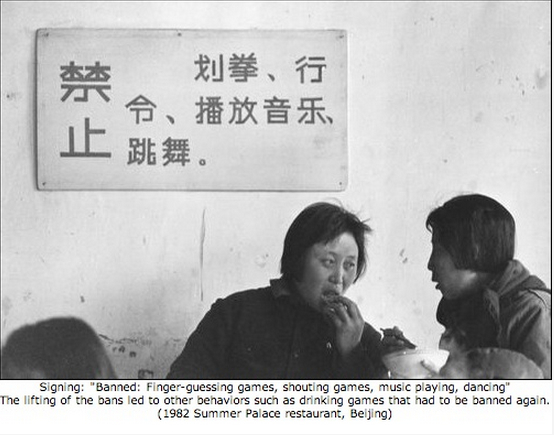
Chapter 4
Methods of teaching with an online focus
Teaching in a Digital Age
Overview
What is covered in this chapter
- 4.1 Online learning and teaching methods
- 4.2 Old wine in new bottles: classroom-type online learning
- 4.3 The ADDIE model
- 4.4 Online collaborative learning
- 4.5 Competency-based learning
- 4.6 Communities of practice
- Scenario E: ETEC 522: Ventures in e-Learning
- 4.7 ‘Agile’ Design: flexible designs for learning
- 4.8 Making decisions about design models
Also in this chapter you will find the following activities:
- Activity 4.2 Moving the classroom model online
- Activity 4.3 Using the ADDIE model
- Activity 4.4 Evaluating online collaborative learning models
- Activity 4.5 Thinking about competency-based education?
- Activity 4.6 Making communities of practice work
- Activity 4.7 Taking risks with ‘agile’ design
- Activity 4.8 Making choices
Based on an actual case, but with some embellishments.
Online learning is increasingly influencing both classroom/campus-based teaching but more importantly it is leading to new models or designs for teaching and learning.
When commercial movies were first produced, they were basically a transfer of previous music hall and vaudeville acts to the movie screen. Then along came D.W. Griffith’s ‘Birth of a Nation’, which transformed the design of movies, by introducing techniques that were unique to cinema at the time, such as panoramic long shots, panning shots, realistic battle scenes, and what are now known as special effects.
A similar development has taken place with online learning. Initially, there were two separate influences: designs from classroom teaching; and designs inherited from print-based or multimedia distance education. Over time, though, new designs that fully exploit the unique characteristics of online learning are beginning to emerge.
What we do when we move teaching online is to change the learning environment. Thus, I am beginning to move from talking about teaching methods (which can be the same both in class and online) to design models, where the teaching method is deliberately adapted to the learning environment.
We start with classroom teaching methods that have been moved into a technological format with little change to the overall design principles. I will argue that these are essentially old designs in new bottles.
4.2.1 Classes using lecture capture
This technology, which automatically records a classroom lecture, was originally designed to enhance the classroom model by making lectures available for repeat viewings online at any time for students regularly attending classes – in other words, a form of homework or revision.
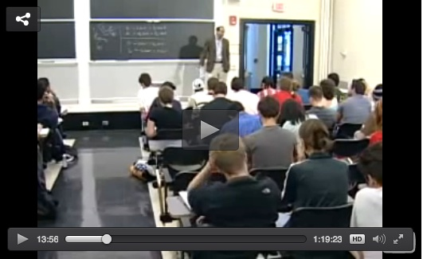
Flipped classrooms, which pre-record a lecture for students to watch on their own, followed by discussion in class, are an attempt to exploit more fully this potential, but the biggest impact has been the use of lecture capture for ‘instructionist’ massive open online courses (xMOOCs), such as those offered by Coursera, Udacity and edX. However, even this type of MOOC is really a basic classroom design model. The main difference with a MOOC is that the classroom is open to anyone (but then in principle so are many university lectures), and MOOCs are available to unlimited numbers at a distance. These are important differences, but the design of the teaching has not changed markedly, although increasingly lectures are recorded in smaller chunks, partly as a result of research on MOOCs.
4.2.2 Courses using learning management systems
Learning management systems (LMSs) are software that enable instructors and students to log in and work within a password protected online learning environment. Most learning management systems, such as Blackboard, Desire2Learn and Moodle, are in fact used to replicate a classroom design model. They have weekly units or modules, the instructor selects and presents the material to all students in the class at the same time, a large class enrolment can be organized into smaller sections with their own instructors, there are opportunities for (online) discussion, students work through the materials at roughly the same pace, and assessment is by end-of-course tests or essays.
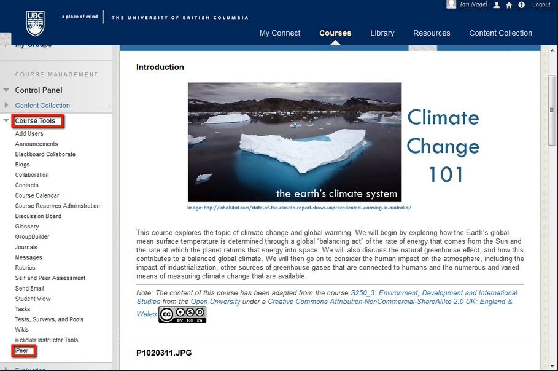
The main design differences are that the content is primarily text based rather than oral (although increasingly video and audio are now integrated into LMSs), the online discussion is mainly asynchronous rather than synchronous, and the course content is available at any time from anywhere with an Internet connection. These are important differences from a physical classroom, and skilled teachers and instructors can modify or adapt LMSs to meet different teaching or learning requirements (as they can in physical classrooms), but the basic organizing framework of the LMS remains the same as for a physical classroom.
Nevertheless, the LMS is still an advance over online designs that merely put lectures on the Internet as pre-recorded videos, or load up pdf copies of Powerpoint lecture notes, as is still the case unfortunately in many online programs. There is also enough flexibility in the design of learning management systems for them to be used in ways that break away from the traditional classroom model, which is important, as good online design should take account of the special requirements of online learners, so the design needs to be different from that of a classroom model.
4.2.3 The limitations of the classroom design model for online learning
Old wine can still be good wine, whether the bottle is new or not. What matters is whether classroom design meets the changing needs of a digital age. However, just adding technology to the mix, or delivering the same design online, does not automatically result in meeting changing needs.
It is important then to look at the design that makes the most of the educational affordances of new technologies, because unless the design changes significantly to take full advantage of the potential of the technology, the outcome is likely to be inferior to that of the physical classroom model which it is attempting to imitate. Thus even if the new technology, such as lecture capture and computer-based multiple-choice questions organised in a MOOC, result in helping more students memorise better or learn more content, for example, this may not be sufficient to meet the higher level skills needed in a digital age.
The second danger of just adding new technology to the classroom design is that we may just be increasing cost, both in terms of technology and the time of instructors, without changing outcomes.
The most important reason though is that students studying online are in a different learning environment or context than students learning in a classroom, and the design needs to take account of this. This will be discussed more fully in the rest of the book.
Education is no exception to the phenomenon of new technologies being used at first merely to reproduce earlier design models before they find their unique potential. However, changes to the basic design model are needed if the demands of a digital age and the full potential of new technology are to be exploited in education.
The other original influence on the design of online teaching has come from military training and distance education.
4.3.1 What is ADDIE?
There have been many books written about the ADDIE model (see for instance, Morrison, 2010; Dick and Carey, 2004). ADDIE stands for:
Analyse
- identify all the variables that need to be considered when designing the course, such as learner characteristics, learners’ prior knowledge, resources available, etc. This stage is similar to the describing the learning environment outlined in Appendix 1 of this book;
Design
- this stage focuses on identifying the learning objectives for the course and how materials will be created and designed (for instance, it may include describing what content areas are to be covered and a storyboard outlining what will be covered in text, audio and video and in what order), and deciding on the selection and use of technology, such as an LMS, video or social media;
Develop
- the creation of content, including whether to develop in-house or outsource, copyright clearance for third party materials, loading of content into a web site or LMS, and so on;
Implement
- this is the actual delivery of the course, including any prior training or briefing of learner support staff, and student assessment;
Evaluate
- feedback and data is collected in order to identify areas that require improvement and this feeds into the design, development and implementation of the next iteration of the course.
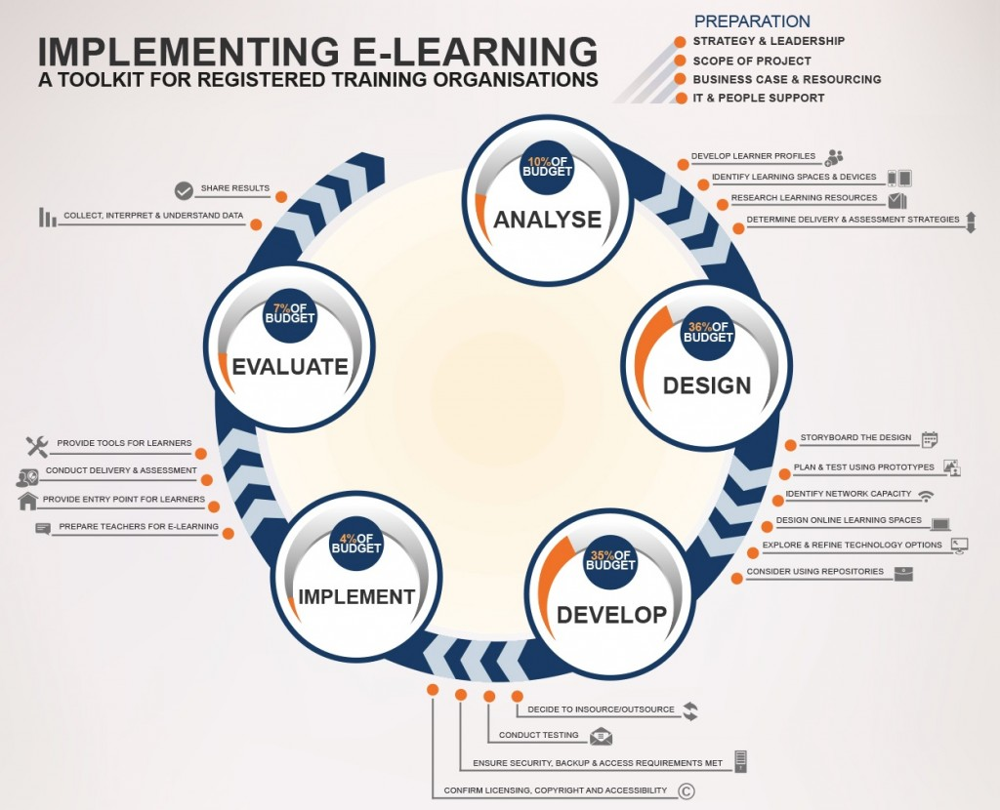
This is an interactive infographic. To see more detail on each of the five stages, click on each stage in the graphic
© Flexible Learning Australia, 2014
4.3.2 Where is ADDIE used?
This is a design model used by many professional instructional designers for technology-based teaching. ADDIE has been almost a standard for professionally developed, high quality distance education programs, whether print-based or online. It is also heavily used in corporate e-learning and training. There are many variations on this model (my favourite is ‘PADDIE’, where planning and/or preparation are added at the start). The model is mainly applied on an iterative basis, with evaluation leading to re-analysis and further design and development modifications. One reason for the widespread use of the ADDIE model is that it is extremely valuable for large and complex teaching designs. ADDIE’s roots go back to the Second World War and derive from system design, which was developed to manage the hugely complex Normandy landings.
Many open universities, such as the U.K. Open University and the OU of the Netherlands, Athabasca University and Thompson Rivers Open University in Canada, have and still do make heavy use of ADDIE to manage the design of complex multi-media distance education courses. When the U.K. OU opened in 1971 with an initial intake of 20,000, it used radio, television, specially designed printed modules, text books, reproduced research articles in the form of selected readings that were mailed to students, and regional study groups, with teams of often 20 academics, media producers and technology support staff developing courses, and with delivery and learner support provided by an army of regional tutors and senior counsellors. Creating and delivering its first courses within two years of receiving its charter would have been impossible without a systematic instructional design, and in 2014, with over 200,000 students, the OU was still using a strong instructional design model.
Although ADDIE and instructional design in general originated in the USA, the U.K. Open University’s success in developing high quality learning materials influenced many more institutions that were offering distance education on a much smaller scale to adopt the ADDIE model, if in a more modest way, typically with a single instructor working with an instructional designer. As distance education courses became increasingly developed as online courses, the ADDIE model continued, and is now being used by instructional designers in many institutions for the re-design of large lecture classes, hybrid learning, and for fully online courses.
4.4.3 What are the benefits of ADDIE?
One reason it has been so successful is that it is heavily associated with good quality design, with clear learning objectives, carefully structured content, controlled workloads for faculty and students, integrated media, relevant student activities, and assessment strongly tied to desired learning outcomes. Although these good design principles can be applied with or without the ADDIE model, ADDIE is a model that allows these design principles to be identified and implemented on a systematic and thorough basis. It is also a very useful management tool, allowing for the design and development of large numbers of courses to a standard high quality.
4.4.5 What are the limitations of ADDIE?
The ADDIE approach can be used with any size of teaching project, but works best with large and complex projects. Applied to courses with small student numbers and a deliberately simple or traditional classroom design, it becomes expensive and possibly redundant, although there is nothing to stop an individual teacher following this strategy when designing and delivering a course.
A second criticism is that the ADDIE model is what might be called ‘front-end loaded’ in that it focuses heavily on content design and development, but does not pay as much attention to the interaction between instructors and students during course delivery. Thus it has been criticised by constructivists for not paying enough attention to learner-instructor interaction, and for privileging more behaviourist approaches to teaching.
Another criticism is that while the five stages are reasonably well described in most descriptions of the model, the model does not provide guidance on how to make decisions within that framework. For instance, it does not provide guidelines or procedures for deciding how to choose between different technologies, or what assessment strategies to use. Instructors have to go beyond the ADDIE framework to make these decisions.
The over-enthusiastic application of the ADDIE model can and has resulted in overly complex design stages, with many different categories of workers (faculty, instructional designers, editors, web designers) and consequently a strong division of labour, resulting in courses taking up to two years from initial approval to actual delivery. The more complex the design and management infrastructure, the more opportunities there are for cost over-runs and very expensive programming.
My main criticism though is that the model is too inflexible for the digital age. How does a teacher respond to rapidly developing new content, new technologies or apps being launched on a daily basis, to a constantly changing student base? Although the ADDIE model has served us well in the past, and provides a good foundation for designing teaching and learning, it can be too pre-determined, linear and inflexible to handle more volatile learning contexts. I will discuss more flexible models for design in Section 4.7.
References
Dick, W., and Carey, L. (2004). The Systematic Design of Instruction. Allyn & Bacon; 6 edition Allyn & Bacon
Morrison, Gary R. (2010) Designing Effective Instruction, 6th Edition. New York: John Wiley & Sons
4.4.1 What is online collaborative learning?
The concurrence of both constructivist approaches to learning and the development of the Internet has led to the development of a particular form of constructivist teaching, originally called computer-mediated communication (CMC), or networked learning, but which has been developed into what Harasim (2012) now calls online collaborative learning theory (OCL). She describes OCL as follows (p. 90):
OCL theory provides a model of learning in which students are encouraged and supported to work together to create knowledge: to invent, to explore ways to innovate, and, by so doing, to seek the conceptual knowledge needed to solve problems rather than recite what they think is the right answer. While OCL theory does encourage the learner to be active and engaged, this is not considered to be sufficient for learning or knowledge construction……In the OCL theory, the teacher plays a key role not as a fellow-learner, but as the link to the knowledge community, or state of the art in that discipline. Learning is defined as conceptual change and is key to building knowledge. Learning activity needs to be informed and guided by the norms of the discipline and a discourse process that emphasises conceptual learning and builds knowledge.
OCL builds on and integrates theories of cognitive development that focus on conversational learning (Pask, 1975), conditions for deep learning (Marton and Saljø, 1997; Entwistle, 2000), development of academic knowledge (Laurillard, 2001), and knowledge construction (Scardamalia and Bereiter, 2006).
From the very early days of online learning, some instructors have focused heavily on the communication affordances of the Internet (see for instance, Hiltz and Turoff, 1978). They have based their teaching on the concept of knowledge construction, the gradual building of knowledge mainly through asynchronous online discussion among students and between students and an instructor.
Online discussion forums go back to the 1970s, but really took off as a result of a combination of the invention of the WorldWide Web in the 1990s, high speed Internet access, and the development of learning management systems, most of which now include an area for online discussions. These online discussion forums have some differences though with classroom seminars:
- first, they are text based, not oral;
- second, they are asynchronous: participants can log in at any time, and from anywhere with an Internet connection;
- third, many discussion forums allow for ‘threaded’ connections, enabling a response to be attached to the particular comment which prompted the response, rather than just displayed in chronological order. This allows for dynamic sub-topics to be developed, with sometimes more than ten responses within a single thread of discussion. This enables participants to follow multiple discussion topics over a period of time.
4.4.2 Core design principles of OCL
Harasim emphasises the importance of three key phases of knowledge construction through discourse:
- idea generating: this is literally brainstorming, to collect the divergent thinking within a group;
- idea organising: this is where learners compare, analyse and categorise the different ideas previously generated, again through discussion and argument;
- intellectual convergence: the aim here is to reach a level of intellectual synthesis, understanding and consensus (including agreeing to disagree), usually through the joint construction of some artefact or piece of work, such as an essay or assignment.
This results in what Harasim calls a Final Position, although in reality the position is never final because for a learner, once started, the process of generating, organising and converging on ideas continues at an ever deeper or more advanced level. The role of the teacher or instructor in this process is seen as critical, not only in facilitating the process and providing appropriate resources and learner activities that encourage this kind of learning, but also, as a representative of a knowledge community or subject domain, in ensuring that the core concepts, practices, standards and principles of the subject domain are fully integrated into the learning cycle.
Harasim provides the following diagram to capture this process:
{kind=link}
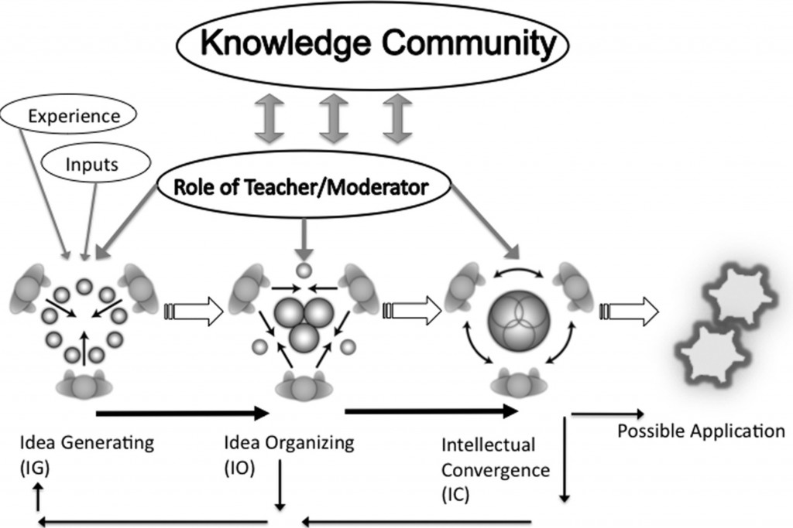
Another important factor is that in the OCL model, discussion forums are not an addition or supplement to core teaching materials, such as textbooks, recorded lectures, or text in an LMS, but are the core component of the teaching. Textbooks, readings and other resources are chosen to support the discussion, not the other way round. This is a key design principle, and explains why often instructors or tutors complain, in more ‘traditional’ online courses, that students don’t participate in discussions. Often this is because where online discussions are secondary to more didactic teaching, or are not deliberately designed and managed to lead to knowledge construction, students see the discussions as optional or extra work, because they have no direct impact on grades or assessment. It is also a reason why awarding grades for participation in discussion forums misses the point. It is not the extrinsic activity that counts, but the intrinsic value of the discussion, that matters (see, for instance, Brindley, Walti and Blashke, 2009). Thus although instructors using an OCL approach may use learning management systems for convenience, they are used differently from courses where traditional didactic teaching is moved online.
4.4.3 Community of Inquiry
The Community of Inquiry Model (CoI) is somewhat similar to the OCW model. As defined by Garrison, Anderson and Archer (2000)
An educational community of inquiry is a group of individuals who collaboratively engage in purposeful critical discourse and reflection to construct personal meaning and confirm mutual understanding.
Garrison, Anderson and Archer argue that there are three essential elements of a community of inquiry:
- social presence ” is the ability of participants to identify with the community (e.g., course of study), communicate purposefully in a trusting environment, and develop inter-personal relationships by way of projecting their individual personalities.”
- teaching presence is “the design, facilitation, and direction of cognitive and social processes for the purpose of realizing personally meaningful and educationally worthwhile learning outcomes”
- cognitive presence “is the extent to which learners are able to construct and confirm meaning through sustained reflection and discourse“.
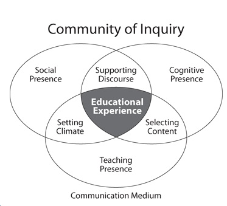
However, CoI is more of a theory than a model, since it does not indicate what activities or conditions are needed to create these three ‘presences’. The two models (OCW and CoI) are also more complementary rather than competing.
4.4.5 Developing meaningful online discussion
Since the publication of the original CoI paper in 2000, there have been a number of studies that have identified the importance of these ‘presences’ within especially online learning (click here for a wide selection). Although there has been a wide range of researchers and educators engaged in the area of online collaborative learning and communities of inquiry, there is a high degree of convergence and agreement about successful strategies and design principles. For academic and conceptual development, discussions need to be well organized by the teacher, and the teacher needs to provide the necessary support to enable the development of ideas and the construction of new knowledge for the students.
Partly as a result of this research, and partly as the result of experienced online instructors who have not necessarily been influenced by either the OCW or the Community of Inquiry literature, several other design principles have been associated with successful (online) discussion, such as:
- appropriate technology (for example, software that allows for threaded discussions);
- clear guidelines on student online behaviour, such as written codes of conduct for participating in discussions, and ensuring that they are enforced;
- student orientation and preparation, including technology orientation and explaining the purpose of discussion;
- clear goals for the discussions that are understood by the students, such as: ‘to explore gender and class issues in selected novels’ or ‘to compare and evaluate alternative methods of coding’;
- choice of appropriate topics, that complement and expand issues in the study materials, and are relevant to answering assessment questions;
- setting an appropriate ‘tone’ or requirements for discussion (for example, respectful disagreement, evidence-based arguments);
- defining clearly learner roles and expectations, such as ‘you should log in at least once a week to each discussion topic and make at least one substantive contribution to each topic each week’;
- monitoring the participation of individual learners, and responding accordingly, by providing the appropriate scaffolding or support, such as comments that help students develop their thinking around the topics, referring them back to study materials if necessary, or explaining issues when students seem to be confused or misinformed;
- regular, ongoing instructor ‘presence’, such as monitoring the discussions to prevent them getting off topic or too personal, and providing encouragement for those that are making real contributions to the discussion, heading off those that are trying to hog or dominate the discussions, and tracking those not participating, and helping them to participate;
- ensuring strong articulation between discussion topics and assessment.
These issues are discussed in more depth by Salmon (2000); Bates and Poole (2003); and Paloff and Pratt (2005; 2007).
4.4.6 Cultural and epistemological issues
Students come to the educational experience with different expectations and backgrounds. As a result there are often major cultural differences in students with regard to participating in discussion-based collaborative learning that in the end reflect deep differences with regard to traditions of learning and teaching. Thus teachers need to be aware that there are likely to be students in any class who may be struggling with language, cultural or epistemological issues, but in online classes, where students can come from anywhere, this is a particularly important issue.
In many countries, there is a strong tradition of the authoritarian role of the teacher and the transmission of information from the teacher to the student. In some cultures, it would be considered disrespectful to challenge or criticize the views of teachers or even other students. In an authoritarian, teacher-based culture, the views of other students may be considered irrelevant or unimportant. Other cultures have a strong oral tradition, or one based on story-telling, rather than on direct instruction.
Online environments then can present real challenges to students when a constructivist approach to the design of online learning activities is adopted. This may mean taking specific steps to help students who are unfamiliar with a constructivist approach to learning, such as sending drafts to the instructor by e-mail for approval before posting a ‘class’ contribution. For a fuller discussion of cross-cultural issues in online learning, see Jung and Gunawardena (2014) and the journal Distance Education, Vol. 22, No. 1 (2001), the whole edition of which is devoted to papers on this topic.
4.4.7 Strengths and weaknesses of online collaborative learning
This approach to the use of technology for teaching is very different from the more objectivist approaches found in computer-assisted learning, teaching machines, and artificial intelligence applications to education, which primarily aim to use computing to replace at least some of the activities traditionally done by human teachers. With online collaborative learning, the aim is not to replace the teacher, but to use the technology primarily to increase and improve communication between teacher and learners, with a particular approach to the development of learning based on knowledge construction assisted and developed through social discourse. This social discourse furthermore is not random, but managed in such a way as to ‘scaffold’ learning:
- by assisting with the construction of knowledge in ways that are guided by the instructor;
- that reflect the norms or values of the discipline;
- that also respect or take into consideration the prior knowledge within the discipline.
Thus there are two main strengths of this model:
- when applied appropriately, online collaborative learning can lead to deep, academic learning, or transformative learning, as well as, if not better than, discussion in campus-based classrooms. The asynchronous and recorded ‘affordances’ of online learning more than compensate for the lack of physical cues and other aspects of face-to-face discussion;
- online collaborative learning as a result can also directly support the development of a range of high level intellectual skills, such as critical thinking, analytical thinking, synthesis, and evaluation, which are key requirements for learners in a digital age.
There are though some limitations:
- it does not scale easily, requiring highly knowledgeable and skilled instructors, and a limited number of learners;
- it is more likely to accommodate to the epistemological positions of faculty and instructors in humanities, social sciences, education and some areas of business studies and health and conversely it is likely to be less accommodating to the epistemological positions of faculty in science, computer science and engineering. However, if combined with a problem-based or inquiry-based approach, it might have acceptance even in some of these subject domains.
4.4.8 Summary
Many of the strengths and challenges of collaborative learning apply both in face-to-face or online learning contexts. It could be argued that there is no or little difference between online collaborative learning and well-conducted traditional classroom, discussion-based teaching. Once again, we see that the mode of delivery is less important than the design model, which can work well in both contexts. Indeed, it is possible to conduct either model synchronously or asynchronously, at a distance or face-to-face.
However, there is enough evidence that collaborative learning can be done just as well online, which is important, given the need for more flexible models of delivery to meet the needs of a more diverse student body in a digital age. Also, the necessary conditions for success in teaching this way are now well known, even though they are not always universally applied.
References
Bates, A. and Poole, G. (2003) Effective Teaching with Technology in Higher Education: Foundations for Success San Francisco: Jossey-Bass
Brindley, J., Walti, C. and Blashke, L. (2009) Creating Effective Collaborative Learning Groups in an Online Environment International Review of Research in Open and Distance Learning, Vol. 10, No. 3
Entwistle, N. (2000) Promoting deep learning through teaching and assessment: conceptual frameworks and educational contexts Leicester UK: TLRP Conference
Garrison, R., Anderson, A. and Archer, W. (2000) Critical Inquiry in a Text-based Environment: Computer Conferencing in Higher Education The Internet and Higher Education, Vol. 2, No. 3
Harasim, L. (2012) Learning Theory and Online Technologies New York/London: Routledge
Hiltz, R. and Turoff, M. (1978) The Network Nation: Human Communication via Computer Reading MA: Addison-Wesley
Jung, I. and Gunawardena, C. (eds.) (2014) Culture and Online Learning: Global Perspectives and Research Sterling VA: Stylus
Laurillard, D. (2001) Rethinking University Teaching: A Conversational Framework for the Effective Use of Learning Technologies New York/London: Routledge
Marton, F. and Saljö, R. (1997) Approaches to learning, in Marton, F., Hounsell, D. and Entwistle, N. (eds.) The experience of learning: Edinburgh: Scottish Academic Press (out of press, but available online)
Paloff, R. and Pratt, K. (2005) Collaborating Online: Learning Together in Community San Francisco: Jossey-Bass
Paloff, R. and Pratt, K. (2007) Building Online Learning Communities: Effective Strategies for the Virtual Classroom San Francisco: Jossey-Bass
Pask, G. (1975) Conversation, Cognition and Learning Amsterdam/London: Elsevier (out of press, but available online)
Salmon, G. (2000) e-Moderating: The Key to Teaching and Learning Online London: Taylor and Francis
Scardamalia, M. and Bereiter, C. (2006) Knowledge Building: Theory, pedagogy and technology in Sawyer, K. (ed.) Cambridge Handbook of the Learning Sciences New York: cambridge University Press
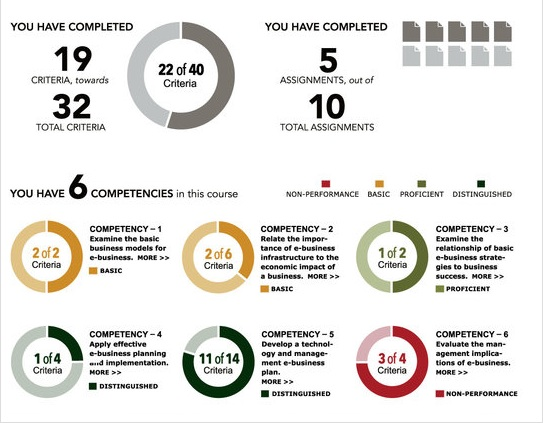
4.5.1 What is competency-based learning?
Competency-based learning begins by identifying specific competencies or skills, and enables learners to develop mastery of each competency or skill at their own pace, usually working with a mentor. Learners can develop just the competencies or skills they feel they need (for which increasingly they may receive a ‘badge’ or some form of validated recognition), or can combine a whole set of competencies into a full qualification, such as a certificate, diploma or increasingly a full degree.
Learners work individually, usually online, rather than in cohorts. If learners can demonstrate that they already have mastery of a particular competency or skill, through a test or some form of prior learning assessment, they may be allowed to move to the next level of competency without having to repeat a prescribed course of study for the prior competency. Competency-based learning attempts to break away from the regularly scheduled classroom model, where students study the same subject matter at the same speed in a cohort of fellow students.
The value of competency-based learning for developing practical or vocational skills or competencies is more obvious, but increasingly competency-based learning is being used for education requiring more abstract or academic skills development, sometimes combined with other cohort-based courses or programs.
4.5.2 Who uses competency-based learning?
The Western Governors University in the USA, with nearly 40,000 students, has pioneered competency-based learning, but, with the more recent support of the Federal Department of Education, competency-based learning is expanding rapidly in the USA. Other institutions making extensive use of competency-based learning are Southern New Hampshire University through its College for America, designed specifically for working adults and their employers, Northern Arizona University, and Capella University.
Competency-based learning is particularly appropriate for adult learners with life experience who may have developed competencies or skills without formal education or training, for those who started school or college and dropped out and wish to return to formal study, but want their earlier learning to be recognized, or for those learners wanting to develop specific skills but not wanting a full program of studies. Competency-based learning can be delivered through a campus program, but it is increasingly delivered fully online, because many students taking such programs are already working or seeking work.
4.5.3 Designing competency-based learning
There are various approaches, but the Western Governors’ model illustrates many of the key steps.
4.5.3.1 Defining competencies
A feature of most competency-based programs is a partnership between employers and educators in identifying the competencies required, at least at a high level. Some of the skills outlined in Chapter 1, such as problem-solving or critical thinking, may be considered high-level, but competency-based learning tries to break down abstract or vague goals into specific, measurable competencies.
For instance, at Western Governors University (WGU), for each degree, a high-level set of competencies is defined by the University Council, and then a working team of contracted subject matter experts takes the ten or so high level competencies for a particular qualification and breaks them down into about 30 more specific competencies, around which are built online courses to develop mastery of each competency. Competencies are based upon what graduates are supposed to know in the workplace and as professionals in a chosen career. Assessments are designed specifically to assess the mastery of each competency; thus students receive either a pass/no pass following assessment. A degree is awarded when all 30 specified competencies are successfully achieved.
Defining competencies that meet the needs of students and employers in ways that are progressive (in that one competency builds on earlier competencies and leads to more advanced competencies) and coherent (in that the sum of all the competencies produces a graduate with all the knowledge and skills required within a business or profession) is perhaps the most important and most difficult part of competency-based learning.
4.5.3.2 Course and program design
At WGU, courses are created by in-house subject matter experts selecting existing online curriculum from third parties and/or resources such as e-textbooks through contracts with publishers. Increasingly open educational resources are used. WGU does not use a learning management system but a specially designed portal for each course. E-textbooks are offered to students without extra cost to the student, through contracts between WGU and the publishers. Courses are pre-determined for the student with no electives. Students are admitted on a monthly basis and work their way through each competency at their own pace.
Students who already possess competencies may accelerate through their program in two ways: transferring in credits from a previous associate degree in appropriate areas (e.g. general education, writing); or by taking exams when they feel they are ready.
4.5.3.3 Learner support
Again this varies from institution to institution. WGU currently employs approximately 750 faculty who act as mentors. There are two kinds of mentors: ‘student’ mentors and ‘course’ mentors. Student mentors, who have qualifications within the subject domain, usually at a masters level, are in at least bi-weekly telephone contact with their students, depending on the needs of the student in working through their courses, and are the main contact for students. A student mentor is responsible for roughly 85 students. Students start with a mentor from their first day and stay with their mentor until graduation. Student mentors assist students in determining and maintaining an appropriate pace of study and step in with help when students are struggling.
Course mentors are more highly qualified, usually with a doctorate, and provide extra support for students when needed. Course mentors will be available to between 200-400 students at a time, depending on the subject requirement.
Students may contact either student or course mentors at any time (unlimited access) and mentors are expected to deal with student calls within one business day. Mentors are full-time but work flexible hours, usually from home. Mentors are reasonably well paid, and receive extensive training in mentoring.
4.5.3.4 Assessment
WGU uses written papers, portfolios, projects, observed student performance and computer-marked assignments as appropriate, with detailed rubrics. Assessments are submitted online and if they require human evaluation, qualified graders (subject matter experts trained by WGU in assessment) are randomly assigned to mark work on a pass/fail basis. If students fail, the graders provide feedback on the areas where competency was not demonstrated. Students may resubmit if necessary.
Students will take both formative (pre-assessment) and summative (proctored) exams. WGU is increasingly using online proctoring, enabling students to take an exam at home under video supervision, using facial recognition technology to ensure that the registered student is taking the exam. In areas such as teaching and health, student performance or practice is assessed in situ by professionals (teachers, nurses).
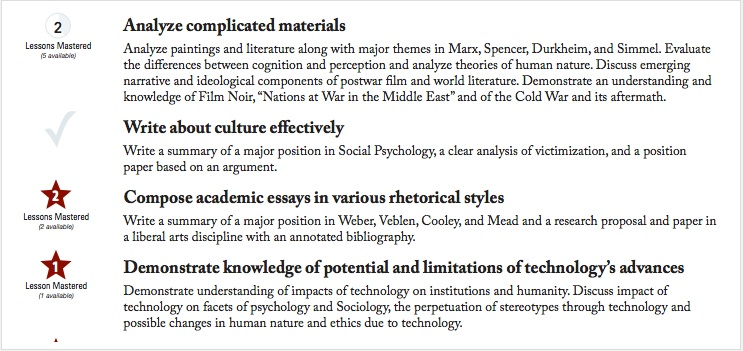
4.5.4 Strengths and weaknesses
Proponents have identified a number of strengths in the competency-based learning approach:
- it meets the immediate needs of businesses and professions; students are either already working, and receive advancement within the company, or if unemployed, are more likely to be employed once qualified;
- it enables learners with work or family commitments to study at their own pace;
- for some students, it speeds up time to completion of a qualification by enabling prior learning to be recognized;
- students get individual support and help from their mentors;
- tuition fees are affordable (US$6,000 per annum at WGU) and programs can be self-funding from tuition fees alone, since WGU uses already existing study materials and increasingly open educational resources;
- competency-based education is being recognized as eligible for Federal loans and student aid in the USA.
Consequently, institutions such as WGU, the University of Southern New Hampshire, and Northern Arizona University, using a competency-based approach, at least as part of their operations, have seen annual enrolment growth in the range of 30-40 per cent per annum.
Its main weakness is that it works well with some learning environments and less well with others. In particular:
- it focuses on immediate employer needs and is less focused on preparing learners with the flexibility needed for a more uncertain future;
- it does not suit subject areas where it is difficult to prescribe specific competencies or where new skills and new knowledge need to be rapidly accommodated;
- it takes an objectivist approach to learning; constructivists would argue that skills are not either present or absent (pass or fail), but have a wide range of performance and continue to develop over time;
- it ignores the importance of social learning;
- it will not fit the preferred learning styles of many students.
4.5.5 In conclusion
Competency-based learning is a relatively new approach to learning design which is proving increasingly popular with employers and suits certain kinds of learners such as adults seeking to re-skill or searching for mid-level jobs requiring relatively easily identifiable skills. It does not suit though all kinds of learners and may be limited in developing the higher level, more abstract knowledge and skills requiring creativity, high-level problem-solving and decision-making and critical thinking.
Further reading
At the time of writing, there is comparatively little literature and even less research on competency-based learning compared with most other teaching approaches. It is also an area that has recently evolved from earlier, more training-focused approaches to competency. I have therefore limited myself to more recent publications. The following publications are recommended for those who would like to pursue this area further:
Book, P. (2014) All Hands on Deck: Ten Lessons from Early Adopters of Competency-based Education Boulder CO: WCET
Cañado, P. and Luisa, M. (eds.) (2013) Competency-based Language Teaching in Higher Education New York: Springer
Garrett, R. and Lurie, H. (2016) Deconstructing CBE: An Assessment of Institutional Activity, Goals and Challenges in Higher Education Boston MA: Ellucian/Eduventures
Rothwell, W. and Graber, J. (2010) Competency-Based Training Basics Alexandria VA: ADST
Weise, M. (2014) Got Skills? Why Online Competency-Based Education Is the Disruptive Innovation for Higher Education EDUCAUSE Review, November 10
The Southern Regional Educational Board in the USA has a comprehensive Competency-based Learning Bibliography
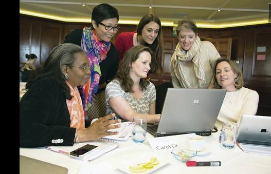
Image: © Belfast Telegraph, 2014
4.6.1 The theories behind communities of practice
The design of teaching often integrates different theories of learning. Communities of practice are one of the ways in which experiential learning, social constructivism, and connectivism can be combined, illustrating the limitations of trying to rigidly classify learning theories. Practice tends to be more complex.
4.6.2 What are communities of practice?
Definition:
Communities of practice are groups of people who share a concern or a passion for something they do and learn how to do it better as they interact regularly.
Wenger, 2014
The basic premise behind communities of practice is simple: we all learn in everyday life from the communities in which we find ourselves. Communities of practice are everywhere. Nearly everyone belongs to some community of practice, whether it is through our working colleagues or associates, our profession or trade, or our leisure interests, such as a book club. Wenger (2000) argues that a community of practice is different from a community of interest or a geographical community in that it involves a shared practice: ways of doing things that are shared to some significant extent among members.
Wenger argues that there are three crucial characteristics of a community of practice:
- domain: a common interest that connects and holds together the community;
- community: a community is bound by the shared activities they pursue (for example, meetings, discussions) around their common domain;
- practice: members of a community of practice are practitioners; what they do informs their participation in the community; and what they learn from the community affects what they do.
Wenger (2000) has argued that although individuals learn through participation in a community of practice, more important is the generation of newer or deeper levels of knowledge through the sum of the group activity. If the community of practice is centered around business processes, for instance, this can be of considerable benefit to an organization. Smith (2003) notes that:
…communities of practice affect performance..[This] is important in part because of their potential to overcome the inherent problems of a slow-moving traditional hierarchy in a fast-moving virtual economy. Communities also appear to be an effective way for organizations to handle unstructured problems and to share knowledge outside of the traditional structural boundaries. In addition, the community concept is acknowledged to be a means of developing and maintaining long-term organizational memory.
Brown and Duguid (2000) describe a community of practice developed around the Xerox customer service representatives who repaired the machines in the field. The Xerox reps began exchanging tips and tricks over informal meetings at breakfast or lunch and eventually Xerox saw the value of these interactions and created the Eureka project to allow these interactions to be shared across the global network of representatives. The Eureka database has been estimated to have saved the corporation $100 million. Companies such as Google and Apple are encouraging communities of practice through the sharing of knowledge across their many specialist staff.
Technology provides a wide range of tools that can support communities of practice, as indicated by Wenger (2010) in the diagram below:
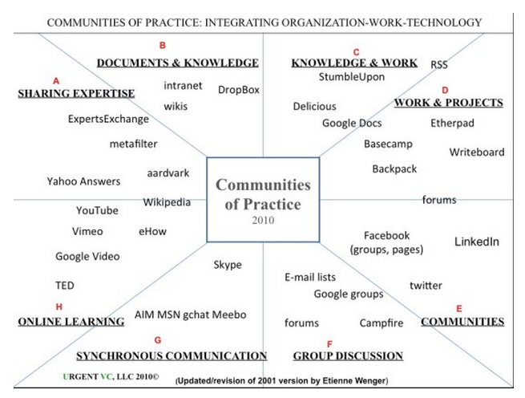
Image: Wenger, 2014
4.6.3 Designing effective communities of practice
Most communities of practice have no formal design and tend to be self-organising systems. They have a natural life cycle, and come to an end when they no longer serve the needs of the community. However, there is now a body of theory and research that has identified actions that can help sustain and improve the effectiveness of communities of practice.
Wenger, McDermott and Snyder (2002) have identified seven key design principles for creating effective and self-sustaining communities of practice, related specifically to the management of the community, although the ultimate success of a community of practice will be determined by the activities of the members of the community themselves. Designers of a community of practice need to:
4.6.3.1 Design for evolution
Ensure that the community can evolve and shift in focus to meet the interests of the participants without moving too far from the common domain of interest.
4.6.3.2 Open a dialogue between inside and outside perspectives
Encourage the introduction and discussion of new perspectives that come or are brought in from outside the community of practice.
4.6.3.3 Encourage and accept different levels of participation
from the ‘core’ (most active members), from those who participate regularly but do not take a leading role in active contributions, and from those (likely the majority) who are on the periphery of the community but may become more active participants if the activities or discussions start to engage them more fully.
4.6.3.4 Develop both public and private community spaces
Communities of practice are strengthened if they encourage individual or group activities that are more personal or private as well as the more public general discussions; for instance, individuals may decide to blog about their activities, or a small group in an online community that live or work close together may also decide to meet informally on a face-to-face basis.
4.6.3.5 Focus on value
Attempts should be made explicitly to identify, through feedback and discussion, the contributions that the community most values.
4.6.3.6 Combine familiarity and excitement
by focusing both on shared, common concerns and perspectives, but also by introducing radical or challenging perspectives for discussion or action.
4.6.3.7 Create a rhythm for the community
There needs to be a regular schedule of activities or focal points that bring participants together on a regular basis, within the constraints of participants’ time and interests.
Subsequent research has identified a number of critical factors that influence the effectiveness of participants in communities of practice, These include being:
- aware of social presence: individuals need to feel comfortable in engaging socially with other professionals or ‘experts’ in the domain, and those with greater knowledge must be willing to share in a collegial manner that respects the views and knowledge of other participants (social presence is defined as the awareness of others in an interaction combined with an appreciation of the interpersonal aspects of that interaction.)
- motivated to share information for the common good of the community
- able and willing to collaborate.
EDUCAUSE has developed a step-by-step guide for designing and cultivating communities of practice in higher education (Cambridge, Kaplan and Suter, 2005).
Lastly, research on other related sectors, such as collaborative learning or MOOCs, can inform the design and development of communities of practice. For instance, communities of practice need to balance between structure and chaos: too much structure and many participants are likely to feel constrained in what they need to discuss; too little structure and participants can quickly lose interest or become overwhelmed.
Many of the other findings about group and online behaviour, such as the need to respect others, observing online etiquette, and preventing certain individuals from dominating the discussion, are all likely to apply. However, because many communities of practice are by definition self-regulating, establishing rules of conduct and even more so enforcing them is really a responsibility of the participants themselves.
4.6.4 Learning through communities of practice in a digital age
Communities of practice are a powerful manifestation of informal learning. They generally evolve naturally to address commonly shared interests and problems. By their nature, they tend to exist outside formal educational organisations. Participants are not usually looking for formal qualifications, but to address issues in their life and to be better at what they do. Furthermore, communities of practice are not dependent on any particular medium; participants may meet face-to-face socially or at work, or they can participate in online or virtual communities of practice.
It should be noted that communities of practice can be very effective in a digital world, where the working context is volatile, complex, uncertain and ambiguous. A large part of the lifelong learning market will become occupied by communities of practice and self-learning, through collaborative learning, sharing of knowledge and experience, and crowd-sourcing new ideas and development. Such informal learning provision will be particularly valuable for non-governmental or charitable organizations, such as the Red Cross, Greenpeace or UNICEF, or local government, looking for ways to engage communities in their areas of operation.
These communities of learners will be open and free, and hence will provide a competitive alternative to the high priced lifelong learning programs being offered by research universities. This will put pressure on universities and colleges to provide more flexible arrangements for recognition of informal learning, in order to hold on to their current monopoly of post-secondary accreditation.
One of the significant developments in recent years has been the use of massive open online courses (MOOCs) for developing online communities of practice. MOOCs are discussed in more detail in Chapter 6, but it is worth discussing here the connection between MOOCs and communities of practice. The more instructionist xMOOCs are not really developed as communities of practice, because they use mainly a transmissive pedagogy, from experts to those considered less expert.
In comparison, connectivist MOOCs are an ideal way to bring together specialists scattered around the world to focus on a common interest or domain. Connectivist MOOCs are much closer to being virtual communities of practice, in that they put much more emphasis on sharing knowledge between more or less equal participants. However, current connectivist MOOCs do not always incorporate what research indicates are best practices for developing communities of practice, and those wanting to establish a virtual community of practice at the moment need some kind of MOOC provider to get them started and give them access to the necessary MOOC software.
Although communities of practice are likely to become more rather than less important in a digital age, it is probably a mistake to think of them as a replacement for traditional forms of education. There is no single, ‘right’ approach to the design of teaching. Different groups have different needs. Communities of practice are more of an alternative for certain kinds of learners, such as lifelong learners, and are likely to work best when participants already have some domain knowledge and can contribute personally and in a constructive manner – which suggests the need for at least some form of prior general education or training for those participating in effective communities of practice.
In conclusion, it is clear is that in an increasingly volatile, uncertain, complex, and ambiguous world, and given the openness of the Internet, the social media tools now available, and the need for sharing of knowledge on a global scale, virtual communities of practice will become even more common and important. Smart educators and trainers will look to see how they can harness the strength of this design model, particularly for lifelong learning. However, merely lumping together large numbers of people with a common interest is unlikely to lead to effective learning. Attention needs to be paid to those design principles that lead to effective communities of practice.
References
Brown, J. and Duguid, P. (2000) Balancing act: How to capture knowledge without killing it Harvard Business Review.
Cambridge, D., Kaplan, S. and Suter, V. (2005) Community of Practice Design Guide Louisville CO: EDUCAUSE
Smith, M. K. (2003) ‘Communities of practice’, the encyclopedia of informal education, accessed 26 September, 2014
Wenger, E. (2000) Communities of Practice: Learning, Meaning and Identity Cambridge UK: Cambridge University Press
Wenger, E. (2014) Communities of practice: a brief introduction, accessed 26 September, 2014
Wenger, E, McDermott, R., and Snyder, W. (2002). Cultivating Communities of Practice (Hardcover). Harvard Business Press; 1 edition.
Update and further reading
Wenger, E., Trayner, B. and de Laat, M. (2011)Promoting and assessing value creation in communities and networks: a conceptual framework Heerlen NL: The Open University of the Netherlands
This document presents a conceptual foundation for promoting and assessing value creation in communities and networks. By value creation we mean the value of the learning enabled by community involvement and networking.
For an interesting critique of this paper, see:
Dingyloudi, F. and Strijbos, J. (2015) Examining value creation in a community of learning practice: Methodological reflections on story-telling and story-reading Seminar.net, Vol. 11, No.3
Mike: Hey, George, come and sit down and tell Allison and Rav about that weird course you’re taking from UBC.
George: Hi, you two. Yeah, it’s a great course, very different from any other I’ve taken.
Rav.: What’s it about?
George: It’s how to go about starting up a technology company.
Allison: But I thought you were doing a masters in education.
George: Yeah, I am. This course is looking at how new technologies can be used in education and how to build a business around one of these technologies.
Mike: Really, George? So what about all your socialist principles, the importance of public education, and all that? Are you giving up and going to become a fat capitalist?
George: No, it’s not like that. What the course is really making me do is think about how we could be using technology better in school or college.
Mike: And how to make a profit out of it, by the sound of it.
Rav.: Shut up, Mike – I’m curious, George, since I’m doing a real business program. You’re going to learn how to set up a business in 13 weeks? Gimme a break.
George: It’s more about becoming an entrepreneur – someone who takes risks and tries something different.
Mike.: With someone else’s money.
George: Do you really want to know about this course, or are you just wanting to give me a hard time?
Allison: Yes, shut up, Mike. Have you chosen a technology yet, George?
George: Almost. We spend most of the course researching and analysing emerging technologies that could have an application in education. We have to find a technology, research it then come up with a plan of how it could be used in education, and how a business could be built around it. But I think the real aim is to get us to think about how technology could improve or change teaching or learning..
Rav.: So what’s the technology you’ve chosen?
George: You’re jumping too far ahead, Rav. We go through two boot camps, one on analysing the edtech marketplace, and one on entrepreneurship: what it takes to be an entrepreneur. Why are you laughing, Mike?
Mike: I just can’t see you in combat uniform, crawling through tubes under gun fire, with a book in your hand.
George: Not that kind of bootcamp. This course is totally online. Our instructor points us in the direction of a few technologies to get us started, but because there’s more stuff coming out all the time, we’re encouraged to make our own choices about what to research. And we all help each other. I must have looked at more than 50 products or services so far, and we all share our analyses. I’m down to possibly three at the moment, but I’m going to have to make my mind up soon, as I have to do a YouTube elevator pitch for my grade.
Rav.: A what?
George: If you look at most of these products, there’s a short YouTube video that pitches the business. I’ve got to make the case for whatever technology I choose in just under eight minutes. That’s going to be 25% of my grade.
Allison: Wow, that’s tough.
George: Well, we all help each other. We have to do a preliminary recording, then everyone pitches in to critique it. Then we have a few days to send in our final version.
Allison: What else do you get grades for?
George: I got 25% of my marks for an assignment that analysed a particular product called Dybuster which is used to help learners with dyslexia. I looked mainly at its educational strengths and weaknesses, and its likely commercial viability. For my second assignment, also worth 25%, we had to build an application of a particular product or service, in my case a module of teaching using a particular product. There were four of us altogether working as a team to do this. Our team designed a short instructional module that showed a chemical reaction, using an off-the-shelf online simulation tool that is free for people to use. I’ll get my last 25% from analysing my own contribution to discussions and activities.
Rav.: What, you give yourself the grade?
George: No, I have to collect my best contributions together in a sort of portfolio, then send them in to the instructor, who then gives the grade based on the quality of the contributions.
Allison: But what I don’t understand is: what’s the curriculum? What text books do you have to read? What do you have to know?
George: Well, there are the two boot camps, but really, we the students, set the curriculum. Our instructor asks us for our first week’s work to look at a range of emerging technologies that might be relevant for education, then we select eight which form the basis of our work groups. I’ve already learned a lot, just by searching and analysing different products over the Internet. We have to think about and justify our decisions. What kind of teaching philosophy do they imply? What criteria am I using when I support or reject a particular product? Is this a sustainable tool? (You don’t want to have to get rid of good teaching material because the company’s gone bust and doesn’t support the technology any more). What I’m really learning though is to think about technology differently. Previously I wasn’t really thinking about teaching differently. I was just trying to find a technology that made my life easier. But this course has woken me up to the real possibilities. I feel I’m in a much better position now to shake up my own school and move them into the digital age.
Allison (sighs): Well, I guess that’s the difference between an undergraduate and a graduate course. You couldn’t do this unless you already knew a lot about education, could you?
George: I’m not so sure about that, Allison. It doesn’t seem to have stopped a lot of entrepreneurs from developing tools for teaching!
Mike: George, I’m sorry. I can’t wait for you to become a rich capitalist – it’s your turn to buy the drinks.
Scenario based on a UBC graduate course for the Master in Educational Technology.
The instructors are David Vogt and David Porter, assisted by Jeff Miller, the instructional designer for the course.
4.7.1 The need for more agile design models
Adamson (2012) states:
The systems under which the world operates and the ways that individual businesses operate are vast and complex – interconnected to the point of confusion and uncertainty. The linear process of cause and effect becomes increasingly irrelevant, and it is necessary for knowledge workers to begin thinking in new ways and exploring new solutions.
In particular, knowledge workers must deal with situations and contexts that are volatile, uncertain, complex and ambiguous (what Adamson calls a VUCA environment). This certainly applies to teachers working with ever new, emerging technologies, very diverse students, and a rapidly changing external world that puts pressure on institutions to change.
If we look at course design, how does a teacher respond to rapidly developing new content, new technologies or apps being launched on a daily basis, to a constantly changing student base, to pressure to develop the knowledge and skills that are needed in a digital age? For instance, even setting prior learning outcomes is fraught in a VUCA environment, unless you set them at an abstract ‘skill’ level such as thinking flexibly, networking, and information retrieval and analysis. Students need to develop the key knowledge management skills of knowing where to find relevant information, how to assess, evaluate and appropriately apply such information. This means exposing students to less than certain knowledge and providing them with the skills, practice and feedback to assess and evaluate such knowledge, then apply that to solving real world problems.
In order to do this, learning environments need to be created that are rich and constantly changing, but which at the same time enable students to develop and practice the skills and acquire the knowledge they will need in a volatile, uncertain, complex and ambiguous world.

Image: © Carol Mase, Free Management Library, 2011, used with permission
4.7.2 Core features of agile design models
Describing the design features of this model is a challenge, for two reasons. First, there is no single approach to agile design. The whole point is to be adaptable to the circumstances in which it operates. Second, it is only with the development of light, easy to use technology and media in the last few years that instructors and course designers have started to break away from the standard design models, so agile designs are still emerging. However, this is a challenge that software designers have also been facing (see for instance, Larman and Vodde, 2009; Ries, 2011) and perhaps there are lessons that can be applied to educational design.
First, it is important to distinguish ‘agile’ design from rapid instructional design (Meier, 2000) or rapid prototyping, which are really both streamlined versions of the ADDIE model. Although rapid instructional design/rapid protyping enable courses or modules to be designed more quickly (especially important for corporate training), they still follow the same kind of sequential or iterative processes as in the ADDIE model, but in a more compressed form. Rapid instructional design and rapid prototyping might be considered particular kinds of agile design, but they lack some of the most important characteristics outlined below:
4.7.2.1 Light and nimble
If ADDIE is a 100-piece orchestra, with a complex score and long rehearsals, then agile design is a jazz trio who get together for a single performance then break up until the next time. Although there may be a short preparation time before the course starts, most of the decisions about what will go into the course, what tools will be used, what activities learners will do, and sometimes even how students will be assessed, are decided as the course progresses.
On the teaching side, there are usually only a few people involved in the actual design, one or sometimes two instructors and possibly an instructional designer, who nevertheless meet frequently during the offering of the course to make decisions based on feedback from learners and how learners are progressing through the course. However, many more content contributors may be invited – or spontaneously offer – to participate on a single occasion as the course progresses.
4.7.2.2 Content, learner activities, tools used and assessment vary, according to the changing environment
The content to be covered in a course is likely to be highly flexible, based more on emerging knowledge and the interests or prior experience of the learners, although the core skills that the course aims to develop are more likely to remain constant. For instance, for ETEC 522 in Scenario F, the overall objective is to develop the skills needed to be a pioneer or innovator in education, and this remains constant over each iteration of the course. However, because the technology is rapidly developing with new products, apps and services every year, the content of the course is quite different from year to year.
Also learner activities and methods of assessment are also likely to change, because students can use new tools or technology themselves for learning as they become available. Very often learners themselves seek out and organise much of the core content of the course and are free to choose what tools they use.
4.7.2.3 The design attempts to exploit the affordances of either existing or emerging technologies
Agile design aims to exploit fully the educational potential of new tools or software, which means sometimes changing at least sub-goals. This may mean developing different skills in learners from year to year, as the technology changes and allows new things to be done. The emphasis here is not so much on doing the same thing better with new technology, but striving for new and different outcomes that are more relevant in a digital world.
ETEC 522 for instance did not start with a learning management system. Instead, a web site, built in WordPress, was used as the starting point for student activities, because students as well as instructors were posting content, but in another year the content focus of the course was mainly on mobile learning, so apps and other mobile tools were strong components of the course.
4.7.2.4 Sound, pedagogical principles guide the overall design of a course – to a point
Just as most successful jazz trios work within a shared framework of melody, rhythm, and musical composition, so is agile design shaped by overarching principles of best practice. Most successful agile designs have been guided by core design principles associated with ‘good’ teaching, such as clear learning outcomes or goals, assessment linked to these goals, strong learner support, including timely and individualised feedback, active learning, collaborative learning, and regular course maintenance based on learner feedback, all within a rich learning environment (see Appendix 1). Sometimes though deliberate attempts are made to move away from an established best practice for experimental reasons, but usually on a small scale, to see if the experiment works without risking the whole course.
4.7.2.5 Experiential, open and applied learning
Usually agile course design is strongly embedded in the real, external world. Much or all the course may be open to other than registered students. For instance, much of ETEC 522, such as the final YouTube business pitches, is openly available to those interested in the topics. Sometimes this results in entrepreneurs contacting the course with suggestions for new tools or services, or just to share experience.
Another example is a course on Latin American studies from a Canadian university. This particular course had an open, student-managed wiki, where they could discuss contemporary events as they arose. This course was active at the same time that the Argentine government nationalised the Spanish oil company, Repsol. Several students posted comments critical of the government action, but after a week, a professor from a university in Argentina, who had come across the wiki by accident while searching the Internet, responded, laying out a detailed defence of the government’s policy. This was then made a formal topic for discussion within the course.
Such courses may though be only partially open. Discussion of sensitive subjects for instance may still take place behind a password controlled discussion forum, while other parts of the course may be open to all. As experience grows in this kind of design, other and perhaps clearer design principles are likely to emerge.
4.7.3 Strengths and weaknesses of flexible design models
The main advantage of agile design is that it focuses directly on preparing students for a volatile, uncertain, complex and ambiguous world. It aims explicitly at helping students develop many of the specific skills they will need in a digital age, such as knowledge management, multimedia communication skills, critical thinking, innovation, and digital literacy embedded within a subject domain. Where agile design has been successfully used, students have found the design approach highly stimulating and great fun, and instructors have been invigorated and enthusiastic about teaching. Agile design enables courses to be developed and offered quickly and at much lower initial cost than ADDIE-based approaches.
However, agile design approaches are very new and have not really been much written about, never mind evaluated. There is no ‘school’ or set of agreed principles to follow, although there are similarities between the agile approach to design for learning with ‘agile’ design for computer software. Indeed it could be argued that most of the things in agile design are covered in other teaching models, such as online collaborative learning or experiential learning. Despite this, innovative instructors are beginning to develop courses in a similar way to ETEC 522 and there is a consistency in the basic design principles that give them a certain coherence and shape, even though each course or program appears on the surface to be very different (another example of agile design, but campus-based, with quite a different overall program from ETEC 522, is the Integrated Science program at McMaster University.)
Certainly agile design approaches require confident instructors willing to take a risk, and success is heavily dependent on instructors having a good background in best teaching practices and/or strong instructional design support from innovative and creative instructional designers. Because of the relative lack of experience in such design approaches the limitations are not well identified yet. For instance, this approach can work well with relatively small class sizes but how well will it scale? Successful use probably also depends on learners already having a good foundational knowledge base in the subject domain. Nevertheless I expect more agile designs for learning to grow over the coming years, because they are more likely to meet the needs of a VUCA world.
References
Adamson, C. (2012) Learning in a VUCA world, Online Educa Berlin News Portal, November 13
Bertram, J. (2013) Agile Learning Design for Beginners New Palestine IN: Bottom Line Performance
Larman, C. and Vodde, B. (2009) Scaling Lean and Agile Development New York: Addison-Wesley
Meier, D. (2000). The Accelerated Learning Handbook. New York: McGraw-Hill
Rawsthorne, P. (2012) Agile Instructional Design St. John’s NF: Memorial University of Newfoundland
Ries, E. (2011) The Lean Start-Up New York: Crown Business/Random House
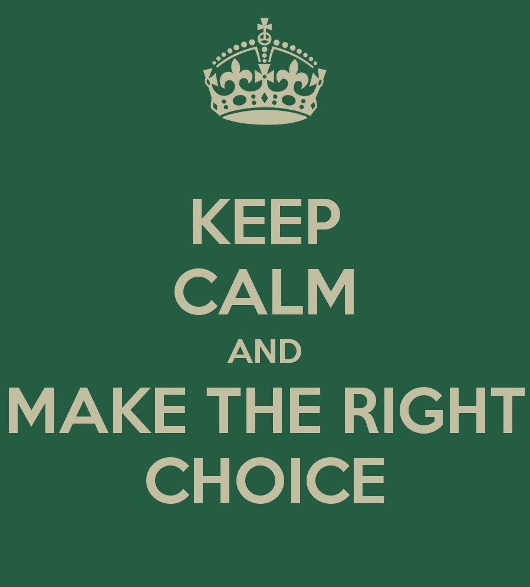
4.8.1 Choosing a model
Chapters 3 and 4 cover a range of different teaching methods and design models. There are many more that could have been included. One noticeable omission are MOOCs. However, the design models behind MOOCs require a full chapter of their own (Chapter 5.)
Your choice of teaching method and the design of the teaching within that method will depend very much on the context in which you are teaching. However, a key criterion should be the suitability of the method and/or design model for developing the knowledge and skills that learners will need in a digital age. Other critical factors will be the demands of the subject domain, characteristics of the learners you will likely be teaching, the resources available, especially in terms of supporting learners, and probably most important of all, your own views and beliefs about what constitutes ‘good teaching.’
Furthermore, the teaching methods covered in Chapters 3 and 4 by and large are not mutually exclusive. They can probably be mixed and matched to a certain degree, but there are limitations in doing this. Moreover, a consistent approach will be less confusing not only to learners, but also to you as a teacher or instructor.
So: how would you go about choosing an appropriate teaching method? I set out below in Figure 4.8.1 one way of doing this. I have chosen five criteria as headings along the top of the table:
4.8.1.1 Epistemological basis
What epistemology does this method suggest? Does the method suggest a view of knowledge as content that must be learned, does the method suggest a rigid (‘correct’) way of designing learning (objectivist)? Or does the method suggest that learning is a dynamic process and knowledge needs to be discovered and is constantly changing (constructivist)? Does the method suggest that knowledge lies in the connections and interpretations of different nodes or people on networks and that connections matter more in terms of creating and communicating knowledge than the individual nodes or people on the network (connectivist)? Or is the method epistemologically neutral, in that one could use the same method to teach from different epistemological positions?
4.8.1.2 Industrial versus digital (i.e. desired learning outcomes)
Does this method lead to the kind of learning that would prepare people for an industrial society, with standardised learning outcomes, will it help identify and select a relatively small elite for higher education or senior positions in society, does it enable learning to be easily organised into similarly performing groups of learners?
Alternatively, does the method encourage the development of the soft skills and the effective management of knowledge needed in a digital world? Does the method enable and support the appropriate educational use of the affordances of new technologies? Does it provide the kind of educational support that learners need to succeed in a volatile, uncertain, complex and ambiguous world? Does it enable and encourage learners to become global citizens?
4.8.1.3 Academic quality
Does the method lead to deep understanding and transformative learning? Does it enable students to become experts in their chosen subject domain?
4.8.1.4 Flexibility
Does the method meet the needs of the diversity of learners today? Does it encourage open and flexible access to learning? Does it help teachers and instructors to adapt their teaching to ever changing circumstances?
Now these are my criteria, and you may well want to use different criteria (cost or your time is another important factor), but I have drawn up the table this way because it has helped me consider better where I stand on the different methods or design models. Where I think a method or design model is strong on a particular criterion, I have given it three stars, where weak, one star, and n/a for not applicable. Again, you may – no, should – rank the models differently. (See, that’s why I’m a constructivist – if I was an objectivist, I’d tell you what damned criteria to use!)
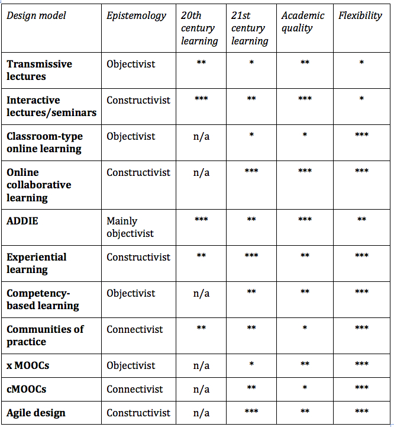
It can be seen that the only method that ranks highly on all three criteria of 21st century learning, academic quality and flexibility is online collaborative learning. Experiential learning and agile design also score highly. Transmissive lectures come out worst. This is a pretty fair reflection of my preferences. However, if you are teaching first year civil engineering to over 500 students, your criteria and rankings will almost certainly be different from mine. So please see Figure 4.8.1 as a heuristic device and not as a general recommendation.
4.8.2 Design models and the quality of teaching and learning
Lastly, the review of different methods indicate some of the key issues around quality:
- first, what students learn is more likely to be influenced by choosing an appropriate teaching method for the context in which you are teaching, than by focusing on a particular technology or delivery method (face-to-face or online). Technology and delivery method are more about access and flexibility and hence learner characteristics than they are about learning. Learning is affected more by pedagogy and the design of instruction;
- second, different teaching methods are likely to lead to different kinds of learning outcomes. This is why there is so much emphasis in this book on being clear about what knowledge and skills are needed in a digital age. These are bound to vary somewhat across different subject domains, but only to a limited degree. Understanding of content is always going to be important, but the skills of independent learning, critical thinking, innovation and creativity are even more important. Which teaching method is most likely to help develop these skills in your students?
- third, quality depends not only on the choice of an appropriate teaching method, but also on how that approach to teaching is implemented. Online collaborative learning can be done well, or it can be done badly. The same applies to other methods. Following core design principles is critical for the successful use of any particular teaching method. Also there is considerable research on what the conditions are for success in using some of the newer methods or design models. The findings from such research need to be applied when implementing a particular method (this is discussed further throughout the book, but specifically in Chapter 11);
- lastly students and teachers get better with practice. If you are moving to a new method of teaching or design model, give yourself (and your students) time to get comfortable with it. It will probably take two or three courses where the new method or design is applied before you begin to feel comfortable that it is producing the results you were hoping for. However, it is better to make some mistakes along the way than to continue to teach comfortably, but not produce the graduates that are needed in the future.
There is still one major teaching method to be discussed, MOOCs, which needs their own chapter (next).
Continue reading
Teaching in a Digital Age: Guidelines for designing teaching and learning by Dr. Tony Bates (CC BY-NC).
Photos: reproduced from the original open textbook (each figure is credited in its caption).
Design: HTML template based on work by HTML5 UP.